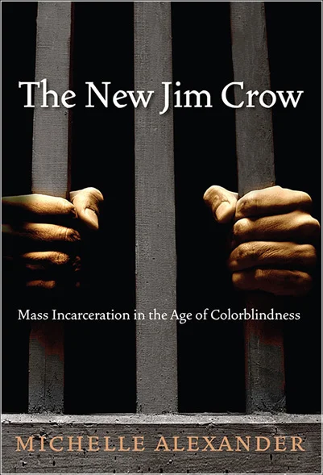
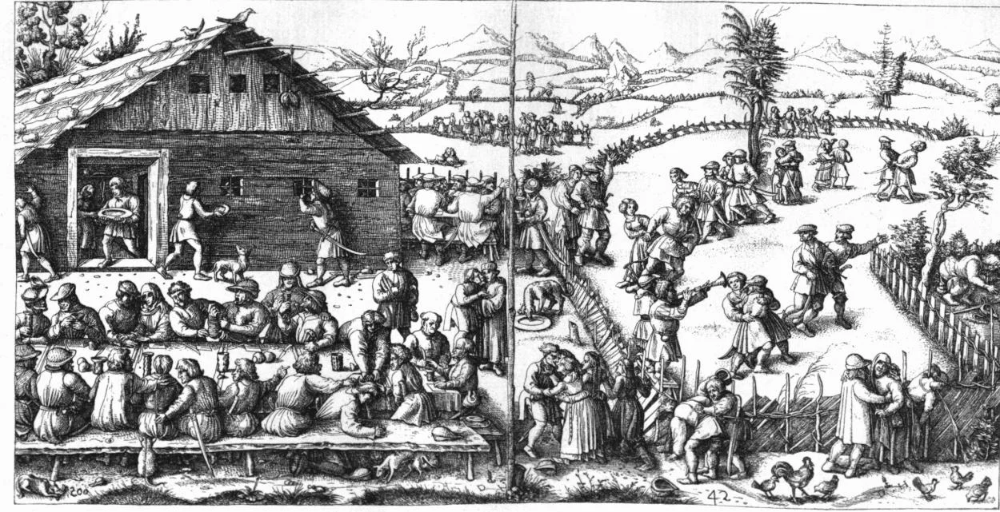
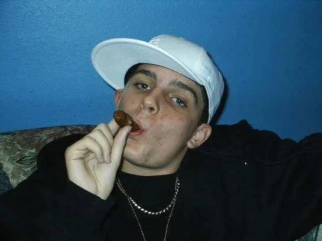
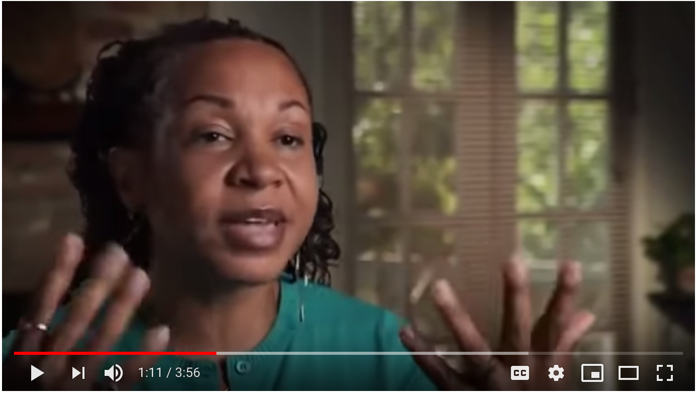
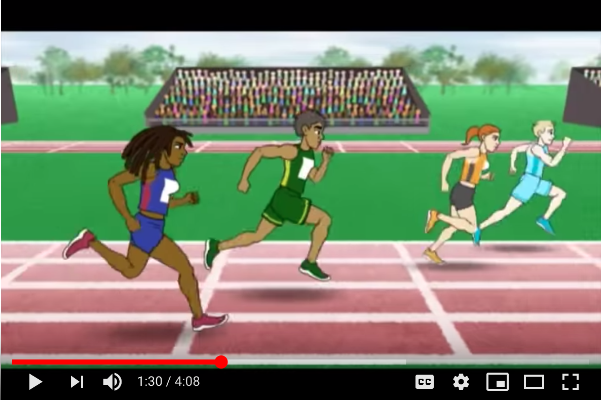

2019-07-10
Summer School Is In Session Learning Together So Together We Can Dismantle Racism
Summer is one of the best times to slow down and dig in to articles, books and other resources that we’ve been saying we will get to all year. In this month’s blog, I’m sharing five resources to get you started!

I was deeply disturbed when I learned how mass incarceration is a continuation of Jim Crow laws and institutional racism. Michelle Alexander laiys out the intentionality of mass incarceration so clearly that that all I kept thinking was “Oh, Shit. This stuff is deep, real and intentional.” I recommend that you read this book because it will leave you with no question about the way that our prison system perpetuates institutional racism. I hope it opens your eyes and makes you angry.

This is a VERY long article so make sure that you make the time to really dig in. It will be worth your time! It is so important that those of us who have come to be known as white understand our history and develop a strong, healthy sense of identity. This historical information was not totally new to me, but it never ceases to amaze me that all of this was left out the history we learned in school. In my opinion, this should be included in curriculum in every school.

This is a really honest story from the author’s personal journey to understand his own internalized racism. He began his journey as an angry white teenage rapper impersonating the “scary black man” to appear stronge. Until he realized that in doing so, he was perpetuating harmful stereotypes.

In this short video, the author of Post Traumatic Slave Syndrome shares a powerful snippet of her experience as a black woman grocery shopping with a lighter skinned black woman. This painfully common story sheds light on the anti-blackness that is so deeply embedded in our subconscious. This is something that happens to many people of color daily, but as I was watching it I realized how unaware I have been. It reminded me how important it is to continue to educate myself and others.

This short animated video has no words, but speaks volumes. I’ve never seen a clearer illustration of racial inequity in the United States. It’s short, to the point, and difficult to watch. I’ve watched it several times myself and I use it in my workshops and trainings as a quick way to demonstrate racial inequity.
I hope you make time to sit and take these resources in. We are all in this together and we can’t afford to wait any longer See you on the path
In solidarity,
Robin